| 日付 | 2021年2月23日（火） |
|---|---|
| 山域 | 箱根 |
| メンバー | 家族（妻、長女・9歳、長男・7歳） |
| 山行形態 | 子連れ日帰り |
| アクセス | 車 |
| ルート (Map) | 最乗寺 (8:06) - (8:29) 登山口 - (9:28) 明神ヶ岳見晴小屋 - (10:59) 明神ヶ岳 (11:54) - (12:58) 明神ヶ岳見晴小屋 - (13:39) 最乗寺 |
明神ヶ岳は過去に3度登ったが、全て外輪山の内側からの登山道だった。
一方、外輪山の外側にも何本か登山道があり、前々から気になっていた。
今回は外輪山の外側にある最乗寺から明神ヶ岳に
至るルートを歩いてみることにする。
最乗寺の駐車場に車を停めさせていただく。標高300m。
駐車場は細かく分かれているが、全体を合わせると駐車台数は多い。
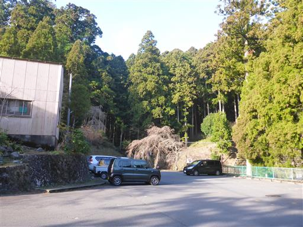
最初に車道をそのまま進んでしまったが、そっちは間違いのよう。
改めて寺の境内に向かって歩き始める。
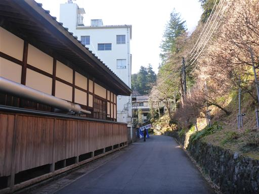
最乗寺。規模が大きく非常に立派な寺だ。
奥に見えるのは本堂ではなく僧堂。
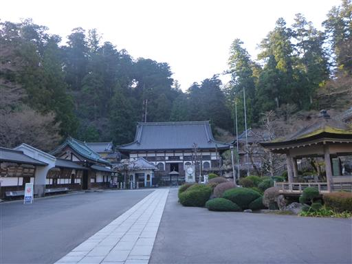
こちらが本堂。
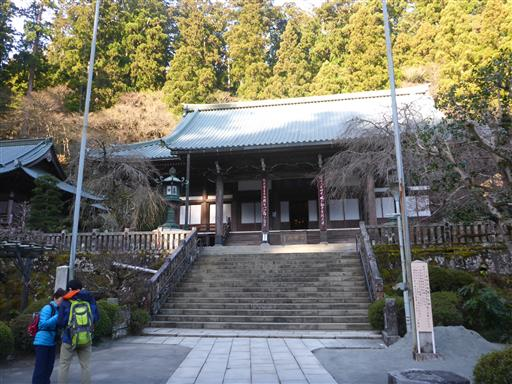
梅の花が咲き始めている。もう春が近い。
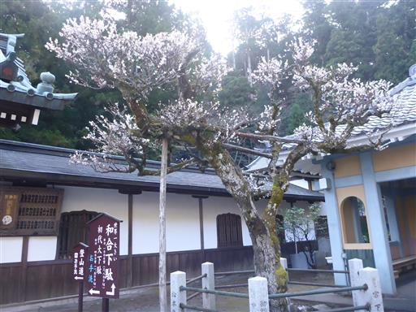
門を抜けて登山道に入っていく。
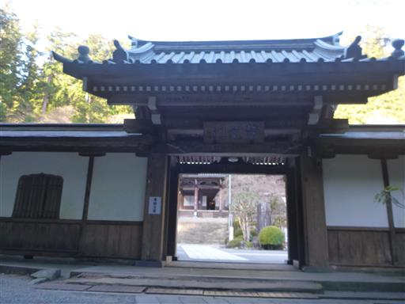
小さな橋を渡る。
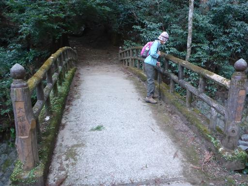
下を流れる川は景観がいまいちだ。
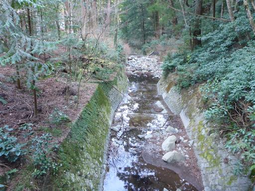
ここから本格的な登山道が始まる。
道は錯綜気味。木の根が露出していて少々登りにくい。
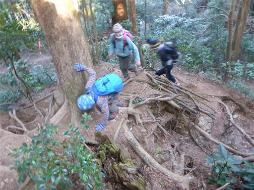
ちょっと不安になる標識。
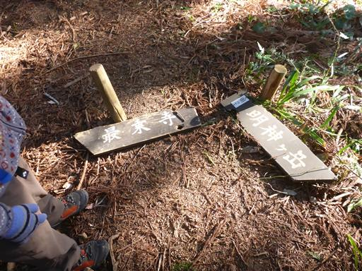
12地蔵。1体1体形が異なる。
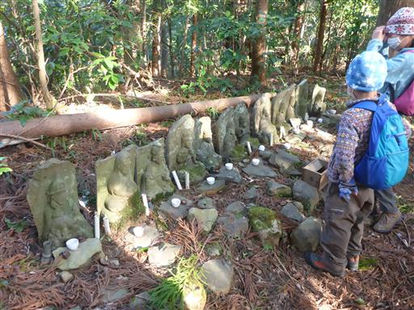
植林地帯が続く。花粉が心配。杉でなく檜なのが救いだ。
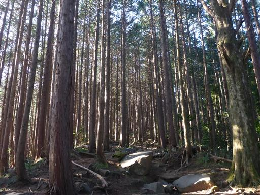
林道を横切る。こんな山の中の林道に横断歩道があるのを始めて見た。
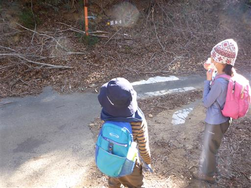
明神ヶ岳見晴小屋に到着。壁が壊れているのにドアや窓が壊れていないのが不思議だ。
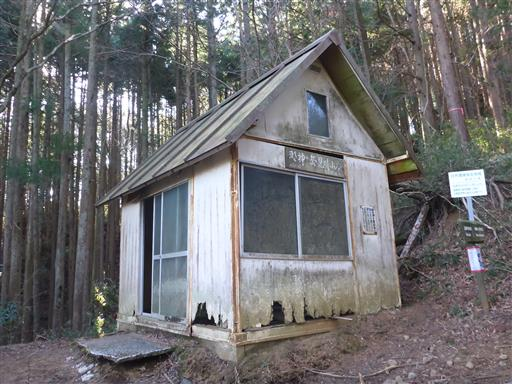
中もボロボロ。雨風がしのげるだけましか。
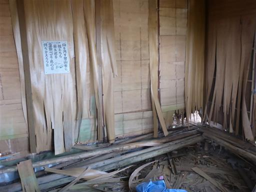
リフトの残骸のようなものが放置されている。
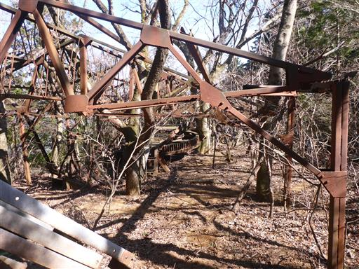
登山道が明るく開けてくる。
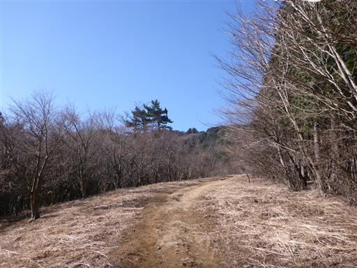
立派な松の木。
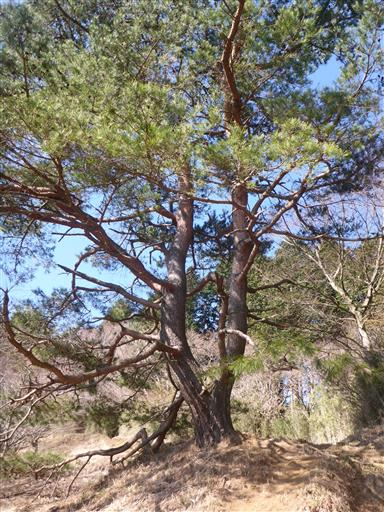
神明水。水は枯れている。
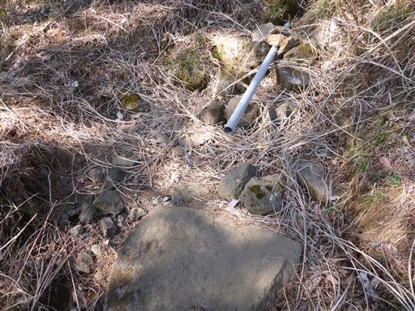
ここにもリフトの跡。
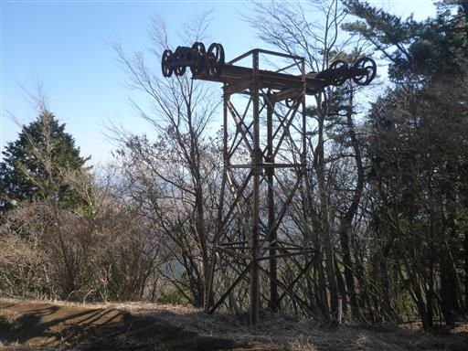
振り返ると丹沢の大山が見える。
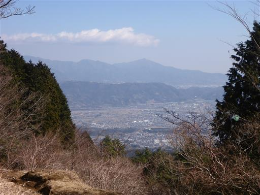
道が大きくえぐれていて歩きづらい。土が柔らかく削れやすいのだろうか？
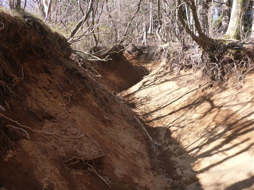
周囲の景色に笹が混ざってくる。
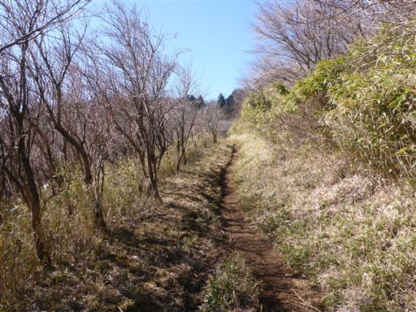
箱根外輪山に到達。
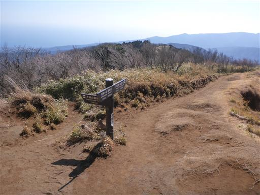
一気に展望が広がる。
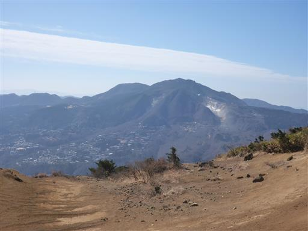
あとは展望の良い尾根道を少し歩くと山頂だ。
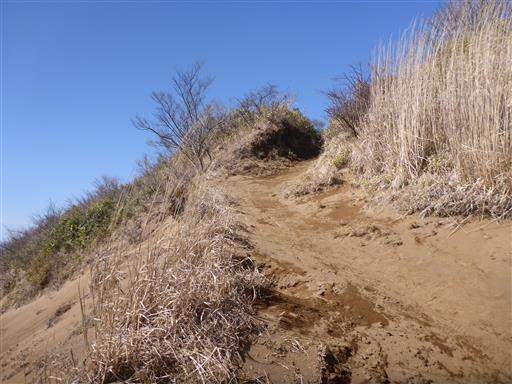
明神ヶ岳に到着。標高1169m。
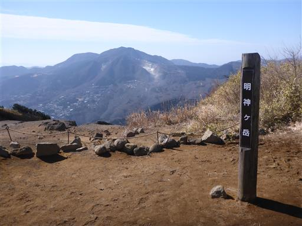
本日は富士山がきれいに見える。
前回は雲に隠れて見えなかったので、そのリベンジを果たせた。
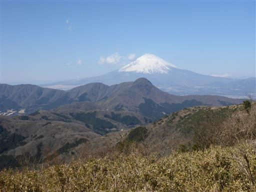
明神ヶ岳山頂から先に進んだところの方が標高が高そうなので少し歩いてみる。
この先辺りが最高地点だろうか？歩いていて気持ちの良い道で金時山まで歩いてみたくなる。
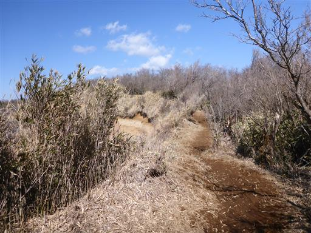
左側は崖で大きく切れ落ちている。
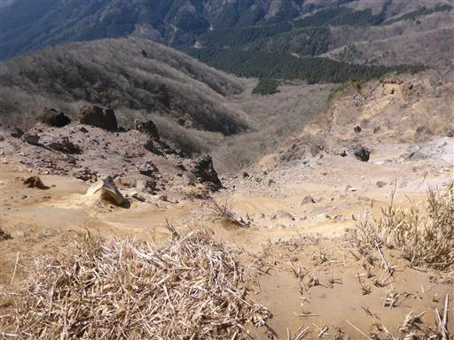
ずっと稜線を歩いていたいが、車まで戻らないといけないので、名残惜しいが下山する。
大展望とはここでお別れだ。
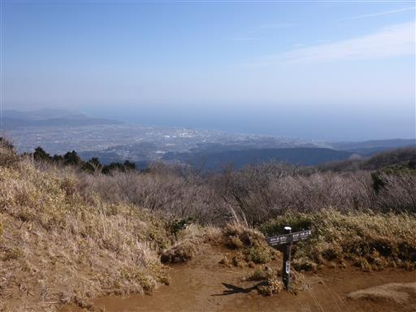
最乗寺まで戻ってくる。
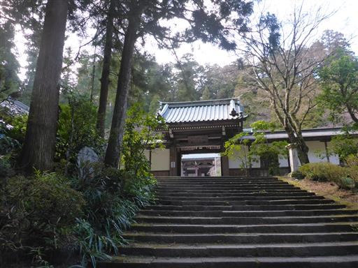
最乗寺は観光客でそれなりに賑わっている。露店が出ていたので団子を買って帰宅。
明神ヶ岳の外輪山外側登山道は延々と緩やかな傾斜の道が続く、
少々面白味に欠ける登山道だったが、家から近くほどよい運動ができた登山だった。
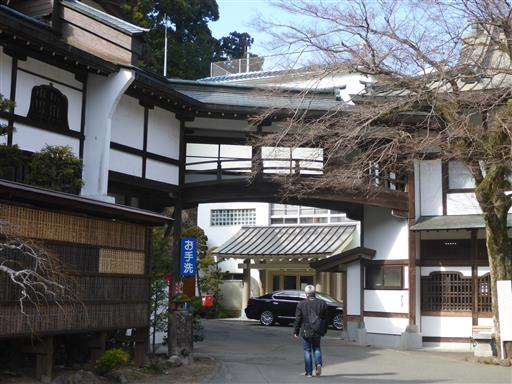